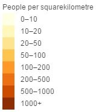
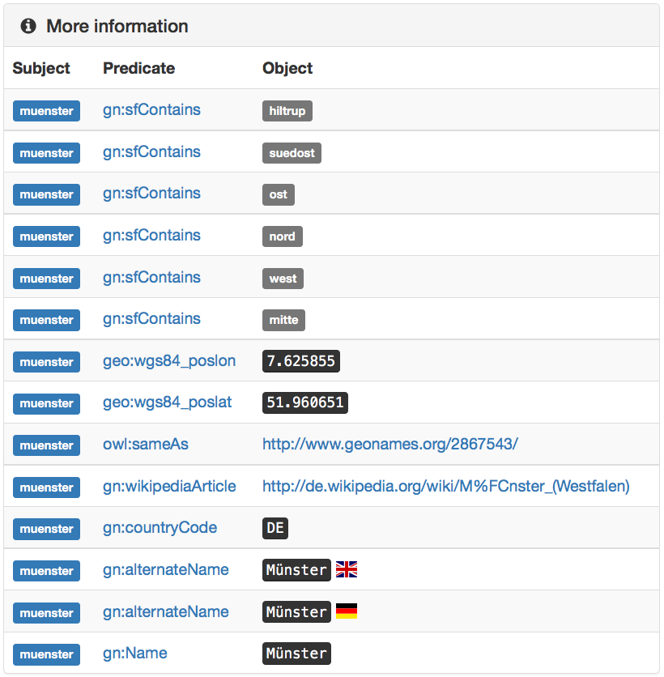
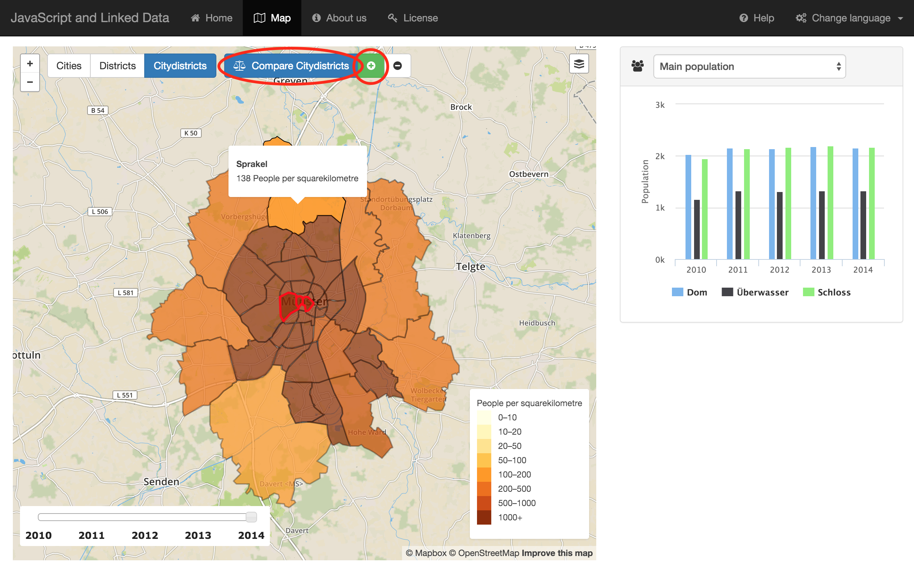
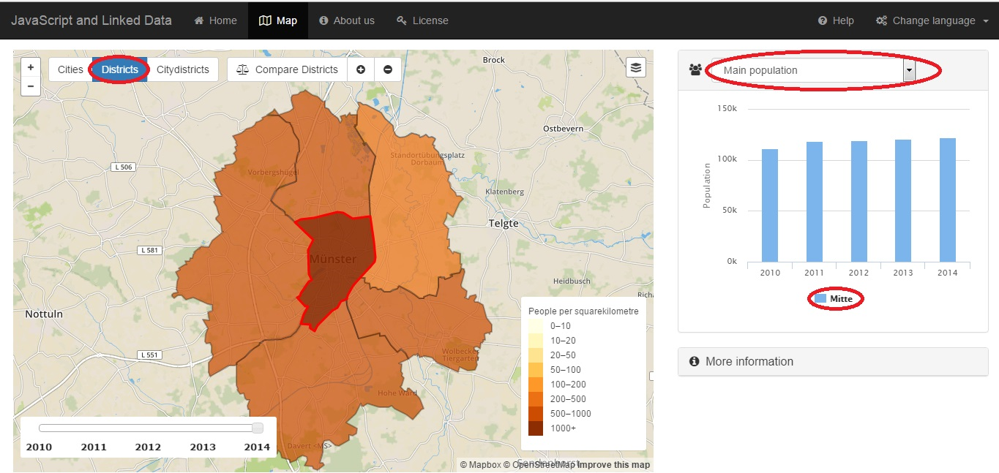
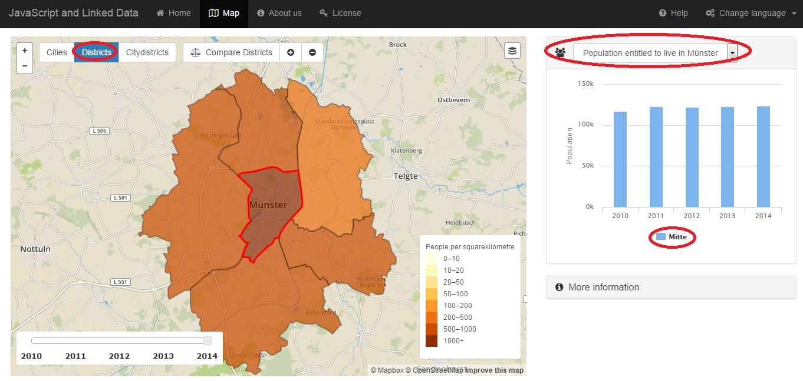
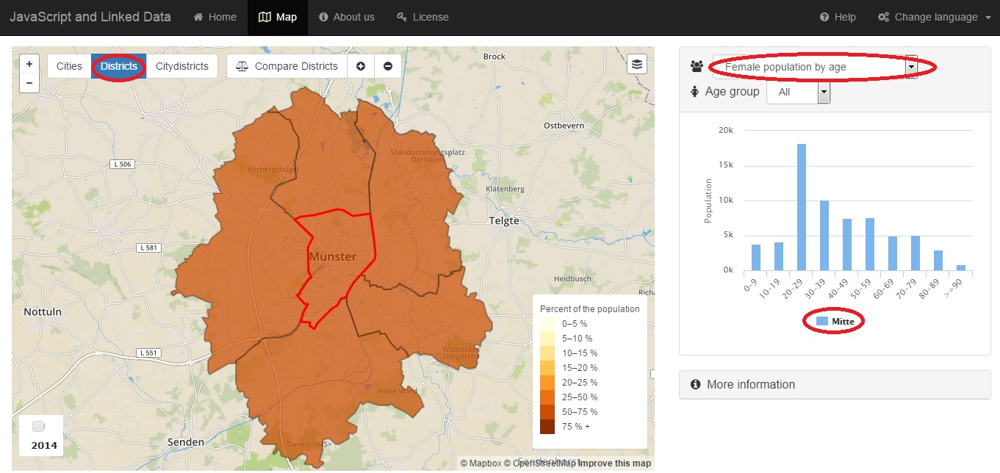

The purpose of this web application is to visualize open data of the city of Münster.
The purpose of this web application is to visualize open data of the city of Münster.
The purpose of this web application is to visualize open data of the city of Münster.
The legend is to visualize population per unit area over the year in the Münster city.
Information panel provide the general information about population data. It also link to external links to show more informations.
This functiion compare district, citydistricts with the population data of the Muenster city.

This gives main population data who live in the main place of the citydistricts, districts of the Muenster city.
The entitled population who live in the city, districts and citydistricts of Muenster.
The population of male by different age group of the citydistricts, districts of the Muenster city.
The population of female by different age group of the citydistricts, districts of the Muenster city.
The male and female population by different age group of the citydistricts, districts of the Muenster city.